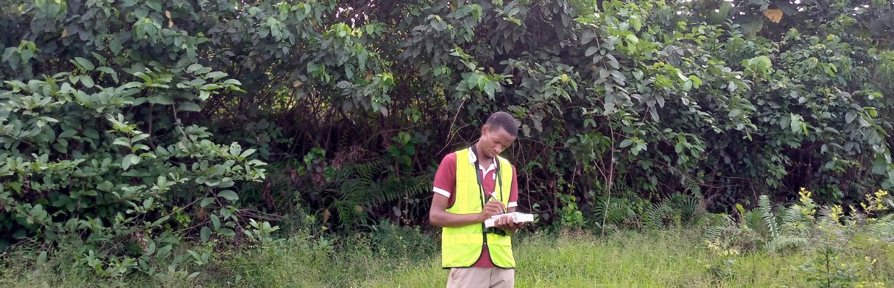

Danmallam Bello Adamu | Applied Ecology

I hold a bachelor’s degree in Applied Ecology from Abubakar Tafawa Balewa University, Bauchi, Nigeria. Prior to obtaining my degree, I had the privilege to be an intern at the A.P. Leventis Ornithological Research Institute (APLORI) assisting in many types of ecological research. I did my National Youth Service (NYSC) teaching biology-related courses at Federal College of Education (FCE), Katsina. During this period, I also volunteered to create awareness on Sustainable Development Goals (SDGs) with the NYSC/SDGs Community Development Service group as a member and later the General Secretary of the club. Immediately after my NYSC, I got sponsorship for a master’s degree at APLORI, University of Jos, Nigeria, where I was trained in both Conservation Biology and Ornithology.
As a student at APLORI, I was fascinated by birds in-flight and how aircraft are nature-inspired, yet the conflicts that exist between birds and aircraft (bird strikes) using the same airspace. So, I decided to study how birds utilize airports landscape in Nigeria. I studied the factors that attract birds within and around the airports relating it to bird and bird strikes data, and its implication for both avian and aviation safety.
Interest: I am research-oriented and very enthusiastic about eduction. I honestly believe that no research question is too complex, and knowledge and research outcomes are meant to be communicated in a simple and engaging way to a wide audience. My interests lie in data science, GIS & remote sensing, wildlife conservation, birds, and birdstrike risk assessment.
I love bird watching, reading, learning programming languages, and building websites like this one.
Download CV
Around the Web
Copyright © 2020 Bello Danmallam. All rights reserved.